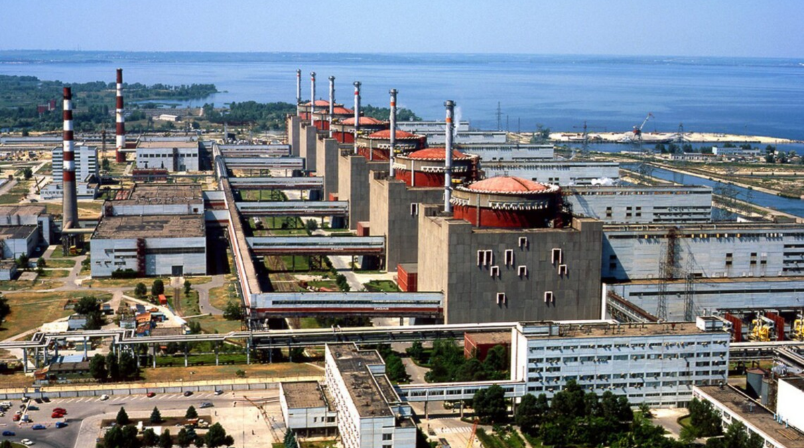
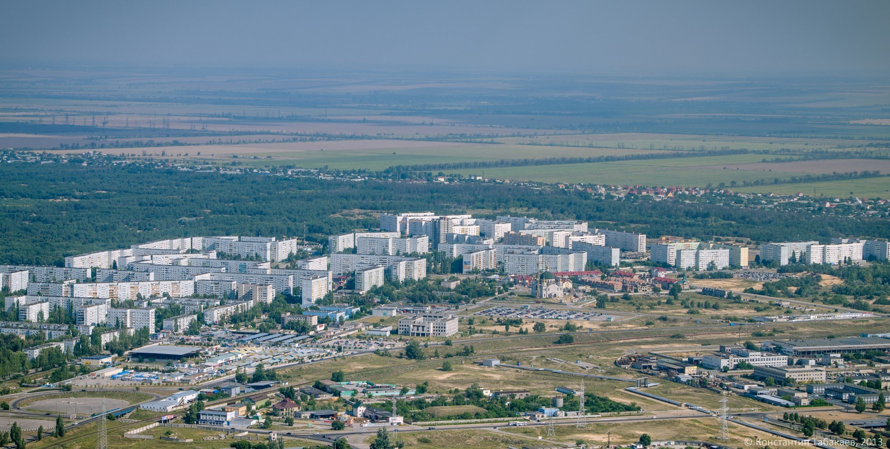
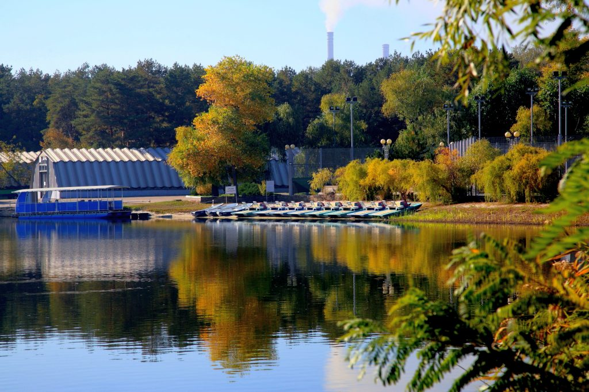
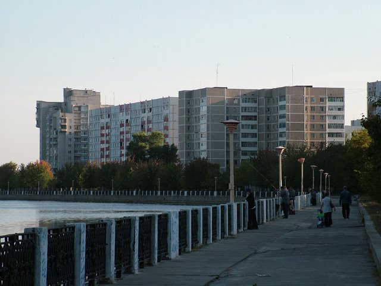
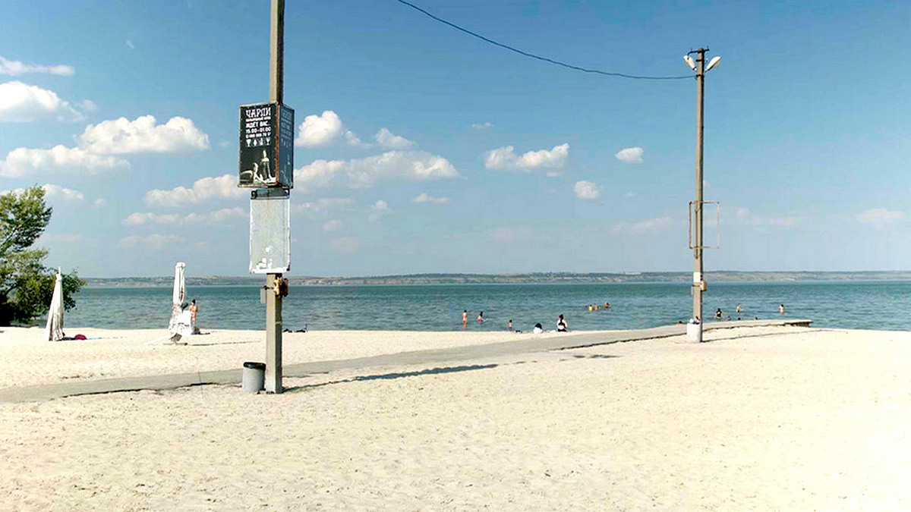

ИСТОРИЯ ГОРОДА

Энергодар - это город в Запорожской области Украины, расположенный на берегу Днепра.
Основан в 1970-х годах в связи с строительством Запорожской АЭС, одной из крупнейших атомных электростанций в Европе.
Город получил свое название в честь этого энергетического объекта.

Энергодар стал важным центром энергетической промышленности и инфраструктуры, обеспечивающей работу АЭС.
Несмотря на свое относительно молодое возраст, город активно развивается и привлекает внимание благодаря своему энергетическому потенциалу и региональному значению.
ПУТЕВОДИТЕЛЬ

Парк имени 30-летия Победы являеться одним из самых популярных парков в городе, где вы можете насладиться прогулкой среди зелени, насладиться свежим воздухом и пообщаться с местными жителями.
Парк предлагает хорошие условия для пикников и отдыха на природе.

Прогулка по набережной Днепра предоставит уникальную возможность насладиться видом на воду и окружающие пейзажи.
Вы сможете насладиться красотой реки, а также обзором города с водной перспективы.

Идеальное место для отдыха и расслабления, пляж "Солнечный" привлекает местных жителей и туристов своей чистой песчаной полосой и возможностями для занятий водными видами спорта.
Здесь вы можете насладиться солнцем и купаться в Днепре, наслаждаясь природой и спокойствием.